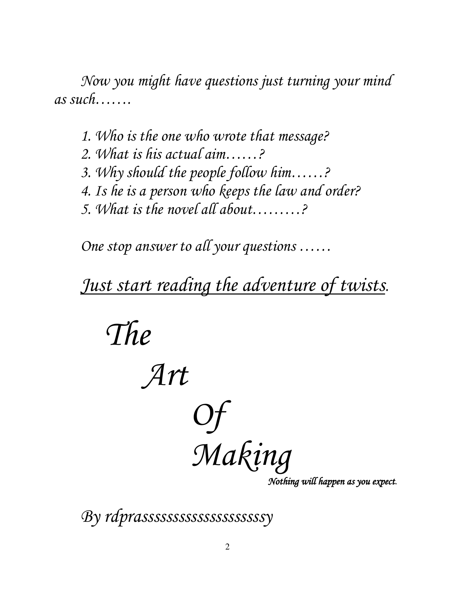

How a well-meant instruction can produce the opposite of its intent.
A novel by Devi Prasad Choudhary Ratnala · writing as rdprassy
The Art
The Art
of Making
“Nothing will happen as you expect.”
An imaginative adventure where a message intended to create peace instead breeds blame and conflict. As the nomadic Jaimans enter the Konkomodo desert, hunger, hospitality, hidden motives, and survival pull the story into an escalating sequence of twists.
92 pages
Fiction adventure
Free to read

01 / THE PREMISE
A simple message.
A simple message.
A dangerous consequence.
The story opens with a demand that people identify one another’s faults in the name of peace. Instead, everyone becomes an enemy of everyone else.
From that contradiction begins the journey of the Jaimans—a hungry nomadic tribe—and the towering Komodos of the Konkomodo desert. Each act of generosity, suspicion, and survival reveals another motive beneath the surface.
Hunger and scarcity test what individuals and tribes are prepared to do.
Hospitality and danger coexist while both groups search for the truth.
The manuscript invites the reader to question every apparent answer.
02 / READ
Turn the first page.
The embedded Google Drive reader loads only when you request it. You can also open the complete PDF in a new tab.
92-page PDF · Google Drive
The adventure of twists begins here.
Load the reader without leaving the portfolio, or open the manuscript directly on Google Drive.
The preview connects to Google Drive only after you press “Load manuscript preview.” Google’s own privacy terms then apply.
03 / SUPPORT THE WORK
Enjoyed the story or the song?
The novel and music remain free to enjoy. If either gave you something—a twist, a line, a memory, or a moment—you can leave an optional tip through Google Pay or any UPI app.
UPI ID
Support is entirely optional. Choose the amount yourself and confirm the recipient “devi prasad choudhary” before authorizing payment.
rdprassy-5@okaxis
THE CREATIVE SIDE OF RDPRASSY